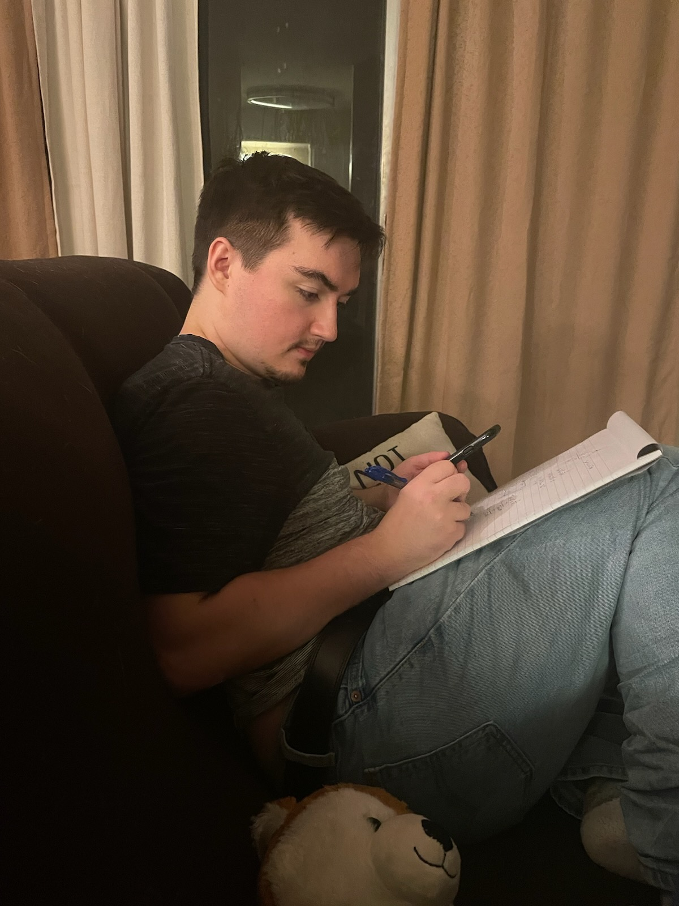

About Me
My name is John Anthony Kappler III, and I was born in Apple Valley, Minnesota on October 10th, 1999. I spent my childhood in Rochester, Minnesota, which is the home of the famous Mayo Clinic. My father worked at Mayo as an IT manager, and my mom stayed home with me and my siblings as we were growing up. From an early age, I was always curious and eager to learn. I especially enjoyed reading about the American Civil War, as well as the World Wars (it makes sense that I majored in history). In high school, I participated in a variety of extracurricular activities, including track, cross country, jazz band, and marching band. I decided my senior year that I wanted to attend the University of Wisconsin – Madison, and that’s where I ended up after I finished high school in 2018. Fast forward five years, and I live in Raleigh, NC with my girlfriend and dog.
